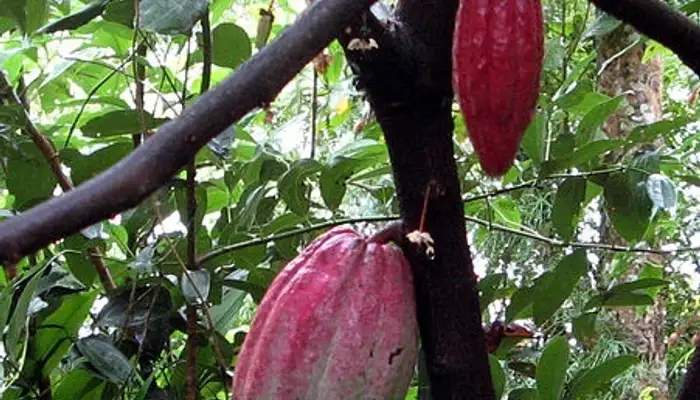
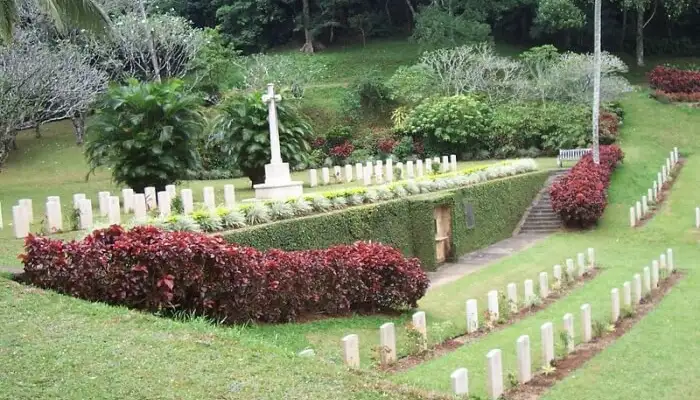
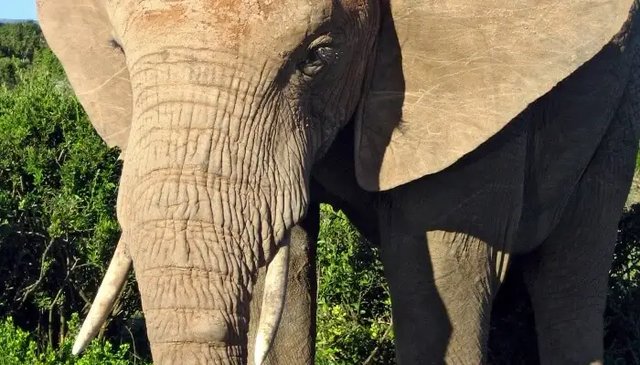
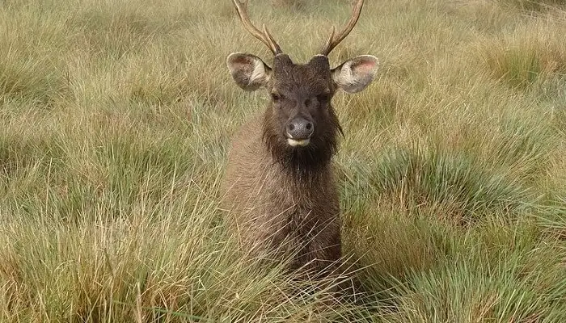
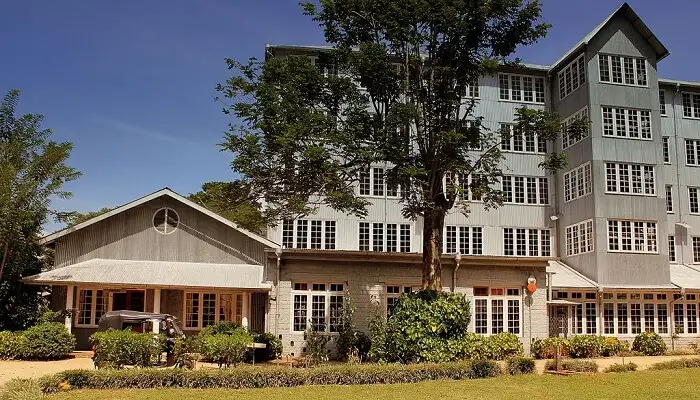
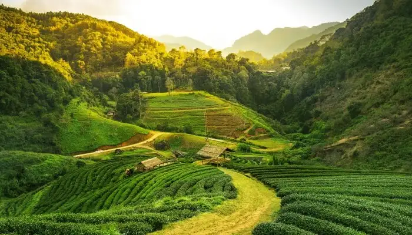
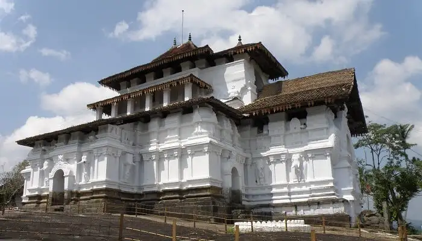
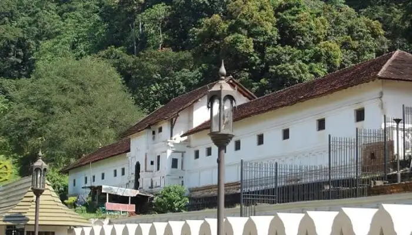

Sri Lanka ‐ the island nation in South Asia ‐ is indeed a pearl of joy shining brightly in the heart of Indian Ocean. The lazy charm
clinging on to the hills and floating by the gushing waves makes Sri Lanka a perfect destination to venture, explore, and contemplate. Snuggled between
the imposing mountains and verdant peaks are some of the best places to visit in Kandy that are defined by calmness and serenity. Known for
spirituality and laid-back charm, Kandy has everything peaceful and balmy about it. The beautiful Sri Lankan city is also a popular attraction for
Buddhists. There are quite a few temples, meditation centres with dense nature around, and exciting trails. Go around and discover eternal
comfort as you plan a much-awaited trip to Sri Lanka.
1.Pinnawala Elephant Orphanage
This one's considered amongst the best places to visit in Kandy for those who are fascinated by the wildlife! Plan a day out with wild Asian elephants at Pinnawala
Elephant Orphanage. This is a -popular breeding ground of 90 plus elephants who stay in their natural habitat. Watch these adorable elephants bathe, play around,
and feed them fruits. Tourists can see them when they take a tour around the orphanage to see the majestic animals. If you are in Kandy visiting places, then this
spot is perfect if you want to have a small picnic along with your friends or family.
Pinnawala is the place where abandoned elephants are raised. Not only orphans but also elephants who are seriously injured or those who get aloof from their group
are given proper shelter & care at the orphanage. The place is situated in the Pinnawala village present in the Sabaragamuwa Province of Sri Lanka. The orphanage
was started in 1975 by the Sri Lanka Department of Wildlife Conservation. The place has evolved into an amazing tourist destination in recent years. The elephants
are kept quite well and you may definitely see that while at this place. The orphanage also accepts elephants that are donated to them and they bring them back to
their health. The elephants have mahouts for them who give them baths and proper food on a timely basis. If you're looking for natural bathing places in Kandy,
then this is it!
2. Temple Of Tooth Relic
Considered as one of the most important temples of Buddhists in Sri Lanka, the Temple of Tooth Relic is located to the north of Kandy Lake and is one of the most
remarkable places to visit in Kandy Sri Lanka. The sacred tooth of Lord Buddha enshrined in the temple makes it one of the popular Kandy tourist places. The room
housing the tooth is open to devotees to offer their prayers. However, nobody gets to see the tooth because it is kept in a golden casket inside a stupa-like
structure. The temple is housed in the royal palace complex of the former Kingdom of Kandy. One of the best places to see in Kandy, this temple is of great
importance due to the belief of the country on the tooth. The temple has rituals thrice a day. The temple was designated a UNESCO World Heritage Site 1988. The
temple still stands strong even after facing attacks twice. Along with the outside, tourists need to visit the inside of the temple to actually appreciate the
architecture. There are holes in the walls which contain lamps lit using coconut oil. Tourists need to pay the entry fees and they should visit between 5:30 AM
and 8:00 PM.
3.Kandy Lake
Adjoining most of the popular tourist places in Kandy and eateries with lake view, the Kandy Lake is certainly among the best places to visit in Kandy, Sri Lanka.
An ideal place to spend hours during your lazy vacation, the lake offers stunning nature views around it and is a perfect romantic sojourn for a romantic couple
visiting the place. The lake, existing since 1807, has a flurry of idyllic places and historical structures around. The lake is also known as the Kiri Muhuda or
the Sea of Milk and is an artificial lake. Being in the heart of the city and beside some of the famous attractions of Kandy, it is a popular tourist site. There
is also an island in the middle of the lake. Around the lake is built the Wakulla Bamma or the Clouds Wall which increases the beauty of it. If you are in Kandy visiting places, tourists can also see the Ulpan or Queens Bathing Pavilion which is a party in the Kandy Lake.
4.Hulu River Waterfall
30 km from Kandy into the quiet town of Dumbara lies Huluganga Falls on the Hulu River. The river originating from the scenic Knuckles Mountain
Range is the perfect escape to leave the onlookers awed. The 75-meter high waterfall, located in the Dumbara town, is a-true beauty enclosed by nature
allure. And it‐s no wonder that-Hulu is considered as one of the popular Kandy places to visit! The Huluganga falls still maintains its pristine
condition because of its natural setting. When visiting places in Kandy, make sure you add this one to your itinerary. Tourists will definitely
enjoy the numerous rocks present in the bed of the waterfall. If they are feeling adventurous they can click pictures sitting on them. When looking
for places to visit near Kandy, then don‐t forget to stop by this majestic waterfall.
5. Bahirawakanda Temple
Just 1 km away from the Kandy city, the Bahirawakanda Temple is a major attraction and a distinct structure. The place is a popular attraction for
Buddhists and there are quite a few international Buddhist relations meetings that are carried out here. This makes it one of the popular things to
see in Kandy. The magnificent structure is huge and can be spotted from anywhere in the city. The place is also an important monastery where many Buddhist
events do take place. The statue was started in 1972 and ended in 1993. You can take the steps to reach the top of the hill or you can take a tuk-tuk ride is
all it takes to get to the temple premises. If you are traveling places in Kandy, don't miss this architectural wonder when you are in the city. People may
actually see the Buddha statue from all around the city but it is a sight to visit it to see the beauty in an up-close-and-personal way. It takes about 200 LKR
to visit the statue. If you are visiting Kandy in August, make sure you add it to your itinerary.
6. Ranweli Spice Garden

Enough of talks about spotting wildlife in their natural habitat! Time to spot greenery and exquisite plant varieties in their natural habitat. This Kandy tourist
attraction is located in the close proximity of Peradeniya Royal Botanical Garden. Turmeric, Peppercorns, Cloves, Cardamom, Vanilla, Cinnamon, Cocoa, and Aloe Vera
are the main plantations that are the-highlights of this place. Visiting this place is one of the best things to do in Kandy for couples. Learn about plantations,
spices, natural products, and various techniques involved while cultivating it. Ranweli Spice Garden is the perfect escape from the hustle of the city life. Vibrant
history and lots of surprises await you at the Spice Garden.
7. Royal Botanical Garden
This place is counted as one of the best Kandy attractions. Spanning over 60 hectares, the Royal Botanical Garden is largest and one of the best places to visit in
Kandy with a-hidden charm to explore. Situated in Peradeniya, the place is quite close to the Mahaweli River. Along with the most striking orchids, you can find more
than 4000 species of plants in this Botanical Garden. You should definitely visit the National Herbarium of Sri Lanka which is attached to this Royal Botanical Garden.
Tourists may tour the whole 147 acres of the garden to spend their day. The garden isnt something new as it was created in 1821 when it contained mostly coffee and
cinnamon plants. Do check out the Cannonball Tree present in this garden which King George V of the United Kingdom and Queen Mary planted in 1901. The garden is also
an ideal place to plan a picnic with family and friends. However, romantic couples can be mostly seen hanging around the garden area. The cab drivers in Kandy mostly
offer to cover Botanical Garden along with Pinnawala Elephant Orphanage or the Kandy temple to make it a Kandy sightseeing tour. The park remains open from 7:30 AM
to 5 PM. You can consider this as one of the amazing places to visit in Kandy for couples.
8. Udawattekele Sanctuary
Located at the hilly terrains of the temple of the tooth relic, this sanctuary served as the retreat for the Kandyan kings in the older times. Later, converted into
a sanctuary, it is an important bio reserve of Kandy. The sanctuary is spread over 104 hectares and is primarily known for the different species of birds residing in
it. Offering as many as 80 species of birds and animals like mammals and insects, it is one of the visiting places in Kandy. Along with the wildlife, you can also
visit the three Buddhist forest monasteries present at this place. Another attraction is the three Buddhist cave dwellings. Tourists will love the thick forest cover
of the area which looks beautiful in the monsoon months. If you are an animal lover and visiting Kandy, you must go here!
9. CommonWealth War Cemetery

This is one of those tourist places in Kandy that should definitely be a part of your itinerary. This cemetery is maintained by the officers. By maintaining the
place they pay tribute to the braveheart soldiers who sacrificed their lives during the Second World War. There are six commonwealth war cemeteries that you must
witness during your vacation in Sri Lanka, yet the one in Kandy is notable amongst all because of the praiseworthy scenic beauty.
10. Millennium Elephant Foundation

The place is located in Randeniya. This is the only place where tourists can actually ride on the elephant's back and travel around the place, they are allowed to
interact with them.The educational tour conducted by the organization is rendered helpful and amusing for the tourists as they can witness right in front of them the
activities of the animal. This Foundation is established in the estate named Samragyi inherited by the Samarasinghe family.
11. Horton Plains National Park Ohiya

If you want to witness the most majestic wildlife of Sri Lanka, this is the place for you! This national park is a treat to travellers fond of mystical beauty of
nature. The valley shadowed by the two mountains Kirigalpotta and Totapola; Sri Lanka's second and third largest mountains. This place is often stated as World's
end because of the surprisingly formed waterfall, mist-filled lakes and the variety of plants and animals found here. The wide variety of flora and fauna makes the
place even more special. The ethereal feeling offered by the place becomes prominent, especially in the morning.
12. Ceylon Tea Museum

The museum located in Hantane the 1925 vintage tea museum built on four floors where the first two floors consist of vintage tea making equipment, machinery,
libraries, museum. To taste the authentic Sri Lankan flavored tea. Visitors can savor a free cup of the tee to relish the flavor. This is one of the most amazing
places to see in Kandy.
13. Wales Park
The Wales Park or the Royal Park is known for its majestic beauty and the splendid view of the Kandy lake makes this place very special. For tourists this
place is an attraction because of the Beauty and the enjoyment people can indulge in under the lap of Nature. This park is rightly considered to be one of
the most beautiful places in Kandy
14. Highlands

Situated in Nuwara Eliya along with the waterfalls the place consist of the tea gardens. Tea cultivating lands are the major attraction for tourists. Its a few
hours journey from Kandy. Travelers could enjoy the flavored beverage and appreciate the authentic taste. When searching for places to visit from Kandy to Nuwara
Eliya, then this site can be the best one!
15. Galmaduwa Temple
This is one of the most prominent temples in Sri Lanka. As the Gal Oya development programme commenced nearby Ampara area, the ruined complex of Galmaduwa Temple
emerged. It was then that this temple was established again and modernized into Vihara complex. Because of this, you can find various recently constructed buildings
here along with some age-old structures like Sandakada Pahana, Chatra stones, Korawakgala, and some giant pillars. This temple is lying on the road that connects
Hingurana and Ampara.
16. Ranawana Purana Rajamaha Vihara
This too is an ancient temple in Kandy known for its glorious historical significance. This temple has been established amidst lush-green natural setting. This
temple is considsered to be one of largest and beautiful temples of Sri Lanka. Theres a trail running through the temple that takes you to the forest. This temple
has been established on the theme of Buddhas life and there are various significant scenarios of his life that have been presented in the forest.
17. Pallekele Cricket Stadium
This stadium is considered to be one of the most famous places in kandy. It is also known by the name Muttiah Muralitharan International Cricket Stadium since
July 2010 when the Central Provincial Council of Kandy declared the plan of naming it after the amazing cricketer Muttiah Muralitharan. However, the name hasnt
yet been officially sanctioned. This stadium was built along Hambantota International Cricket Stadium for the 2011 World Cup. It was inaugurated on
November 27th, 2009 and even became 104th Test Venue of the world. For all the cricket lovers out there, this will definitely be one of the best places to visit
in Kandy city.
18. Giragama Tea Plantations
Tea plantations are the common things about Sri Lanka. Kandy is no less when it comes to tea plantations and one of the best places to visit in Kandy is Giragama
tea plantations. Giragaram is a pretty little town in Kandy that is known for its tea plantations. It offers the much needed peace and tranquility along with
picturesque views that will leave your soul stirred. There are estates wherein you can walk and soak the views. Keep this in your list of places to see in Kandy
for a refreshing experience as this place is one of the best visiting places in Kandy. This is also one of the best things to do in Kandy.
19. Kandy Viewpoint
Kandy is the heart of Sri Lanka and watching the gorgeous hill station from a height is not something everyone gets to witness, so don't miss out on exploring
the most beautiful places to visit in Kandy on your vacay. The viewpoint is located at a distance of 1.7 km from the city centre and the route to the viewpoint
is equally mesmerizing. Carry your camera along for some instagrammable pictures at this point which is one of the best places to visit in Kandy. It is also one
of the top places for trekking in Sri Lanka.
20. Lankatilaka Temple

One of the best places to visit in Kandy is Lanka Talika temple which is very famous amongst the locals as well as tourists. Dedicated to Lord Buddha,
the temple is the epitome of rich history and culture of the beautiful city. The architecture is something you can marvel at and it is divided amongst
three sections. Make sure you visit the temple as it is one of the most beautiful places in Kandy.
21. Hanthana Mountain Range
One of the most beautiful places in Kandy, Hanthana Mountain Range is every nature lover's paradise. The mountain ranges are located on the outskirts of Kandy
city and appeal to tourists as an amazing picnic and hiking spot. One can even enjoy the exhilarating views of the city from top. Declared as environmentally
protected areas, the range consists of seven peaks, Uuara Kanda being the highest one. This is also one of the best visiting places in Kandy.
22. Royal Palace Of Kandy

Royal Palace of Kandy is one of the historical kandy tourist attractions that is absolutely mandatory to visit. Located north of the Temple of Tooth Relic,
the palace is an exhibit of Kandy's rich legacy and heritage. It was built by Vikramabahu in the 14th century. It was the last building to be built by a Sri
Lankan king before British colonialism took over. You will definitely fall in love with the impeccable architecture.
23. Degaldoruwa Temple
Built by King Rajadhi Rajasinha, Degaldoruwa Temple is one of the oldest Buddist rock temples in Kandy. Undoubtedly, one of the best Kandy attractions, you
should definitely make a visit and admire the old colorful frescoes on the wall that tell a thousand stories. The cave inside the temple is excavated out of
a rock and is known to be at least 12 m high. You should definitely put this place on your itinerary if you happen to be visiting Kandy.